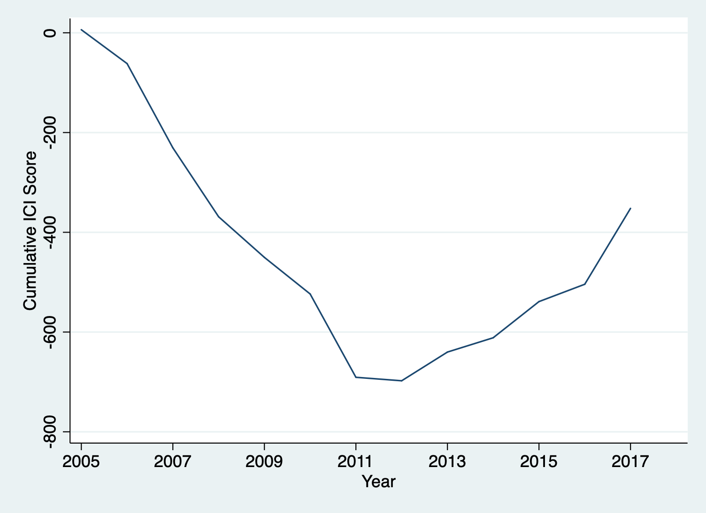
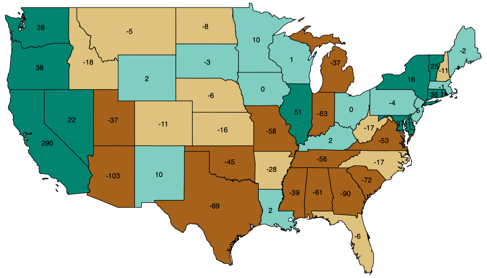

Figure 1. The U.S. Immigrant Climate has become increasingly negative since 2005, bottomed in 2012 and has since gotten a little more positive due to laws at the city and county levels. (Updated August 2018)
The ICI scores for the U.S. above and state scores in the map below capture climates toward immigrants created by legislation enacted at the state, county, and city levels from 2005 to 2017. A more negative score denotes a more hostile climate; a more positive score a more hospitable climate. The methodology we use to construct the ICI is described below.

Figure 2. Immigrant climates vary widely across states; the polar positions are occupied by two neighboring states, California and Arizona. (Updated August 2018)
We have been collecting city, county, and state immigration laws from 2005 to 2017. From this database of subfederal laws we construct the ICI, a measure of regulation-induced climate for immigrants. We classified laws into one of four tiers and assigned a weight to individual laws based on the tier, whether it provides a benefit (+) or a restriction (-), and its geographic reach.Tier 4 laws (± 4 points) affect many aspects of life for immigrants and have the most impact on climate. This tier consists of regulations related to law enforcement, includes laws that enhance or restrict the authority of law enforcement to enforce immigration laws and laws that change a defendant’s treatment in the criminal justice system, based on immigration status. Among subfederal immigration regulations, these laws have the most impact because contact with law enforcement may lead to detention or deportation for immigrants.
Tier 3 laws (± 3 points) affect a crucial aspect of life for immigrants, an aspect that is difficult for the immigrant to avoid or substitute. We include in this tier laws that make it harder or easier for immigrants to obtain private housing (e.g., laws that require landlords to check the immigration status of tenants), identification (like driver’s licenses), or any kind of employment (e.g., by requiring employers to verify the lawful immigration status of employees or face state or local penalties).
Tier 2 laws (± 2 points) affect an important but not crucial aspect of life for immigrants, an aspect for which immigrants can find alternatives, albeit not easily. This tier includes laws that make it harder or easier for immigrants to obtain specific jobs (including work as day laborers) or specific work licenses (like CPA licenses). The tier also includes laws that restrict or enhance access to government benefits based on immigration status, benefits like welfare programs, workers’ compensation, healthcare, public housing, naturalization and refugee assistance, and education programs.
Finally, Tier 1 laws (± 1 point) affect immigrants’ lives but in a less important or less significant way. Laws in this tier include English-only laws, laws that make it harder or easier for immigrants to vote, or legal services laws (typically laws that regulate the legal market to prevent immigrants from being defrauded).
The laws are weighted by the fraction of the state population that lives in the jurisdiction covered by the law.
We started our data collection with laws enacted in 2005, the year that subfederal immigration regulation began in earnest. Certainly, there was some subfederal enforcement before 2005, but these laws were largely isolated in nature.
For a more detailed discussion on the construction of the ICI and the Local Immigration Laws Database, see the second reference listed below.